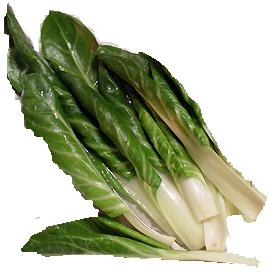

Acelga

La siembra
Fecha: Hay variedades de todo el año, de otoño-invierno (semillas importadas) y de primavera-verano (semillas del país).
Forma: Directamente sobre el cantero, en filas.
Distancia: Dejar unos 15 centímetros en todas las direcciones para cada planta.
Cantidad de semillas (para 10 m2): 0,5 gramos para obtener unas 100 plantas.
¿Qué tenemos que hacer para cuidar nuestro cultivo?
- Es un cultivo resistente a las heladas.
- Cuidar la profundidad de siembra y cubrir el cantero, luego de sembrar, hasta que germine.
- Dejar el espacio recomendado entre las plantas, a fin de que puedan crecer, al tiempo que se evitan enfermedades.
- Si las plantas están muy juntas, se deben entresacar algunas y llevarlas a otro cantero.
- Sacar los yuyos para evitar la competencia.
- Prestar atención al riego, es muy importante en el momento de la germinación; luego estar atento a la situación del cultivo.
La cosecha
- La cosecha se inicia a los 60 días de la fecha de siembra.
- Se deben cortar las hojas grandes (de 30 a 40 centímetros), empezando por las de afuera.
- Hay que cuidar de no dañar las hojas internas, que cosecharemos más adelante.
Producción de semillas
Dejar una planta sana y vigorosa para que dé flor y así poder cosechar las semillas.